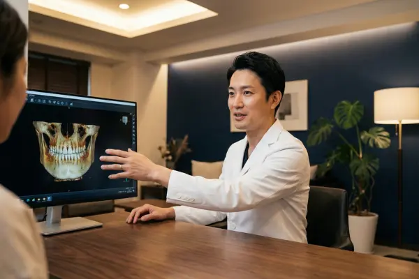
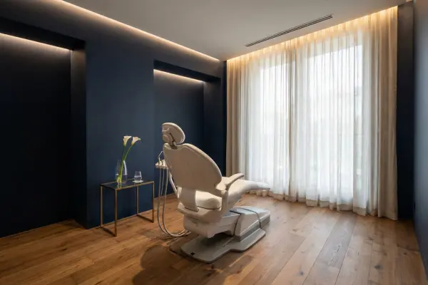
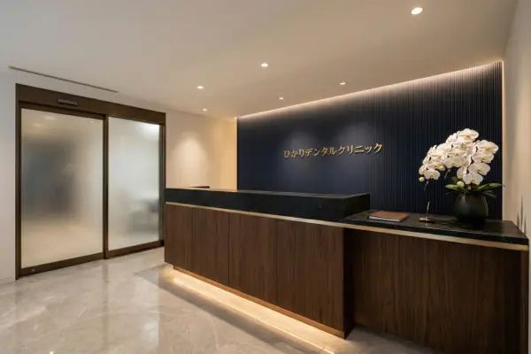
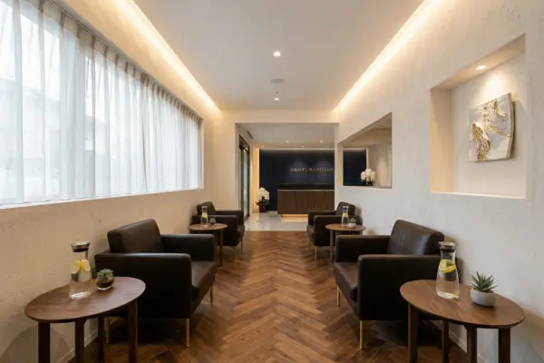
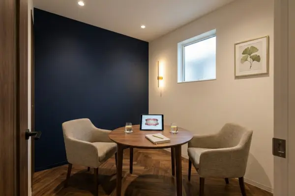
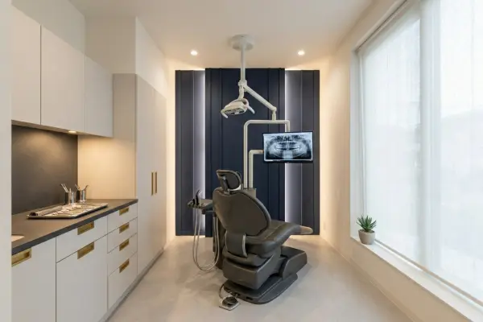
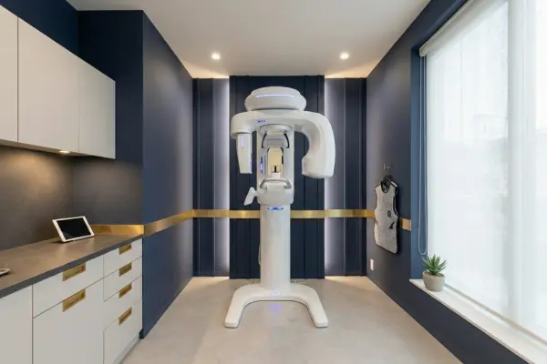
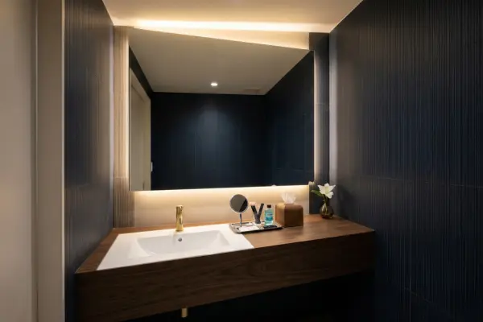

インプラント・審美歯科・ホワイトニング
自費診療専門クリニック
美しさと機能を両立する、
あなただけの歯科治療を。
-
インプラント実績
年間200本以上 -
精密審美治療
マイクロスコープ完備 -
土日診療
完全予約制
SCROLL
多くの患者さまに選ばれる理由

01
経験豊富な専門医チーム
インプラント学会認定医・補綴専門医が在籍。豊富な症例実績に基づく的確な治療計画をご提案します。
02
最新設備による精密治療
歯科用CT・マイクロスコープ・口腔内スキャナーを完備。肉眼では見えない精度で治療を行います。

03
完全個室・プライバシー重視
全室完全個室のカウンセリングルーム・診療室。周囲を気にせず安心してご相談いただけます。
SPECIALTY
専門分野
CASE
症例紹介
VOICE
患者さまの声
FACILITY
院内のご案内






アクセス情報
ひかりデンタルクリニック
〒162-0000
東京都新宿区○○1-2-3 ○○ビル3F
「○○駅」東口 徒歩3分
東京都新宿区○○1-2-3 ○○ビル3F
「○○駅」東口 徒歩3分
完全予約制
03-0000-0000
| 診療時間 | 月 | 火 | 水 | 木 | 金 | 土 | 日 |
|---|---|---|---|---|---|---|---|
| 10:00 - 13:30 | ● | ● | ● | ● | ● | ● | ● |
| 15:00 - 19:30 | ● | ● | - | ● | ● | ▲ | ▲ |
休診日：祝日・水曜午後
▲ 土日は14:30 - 18:00